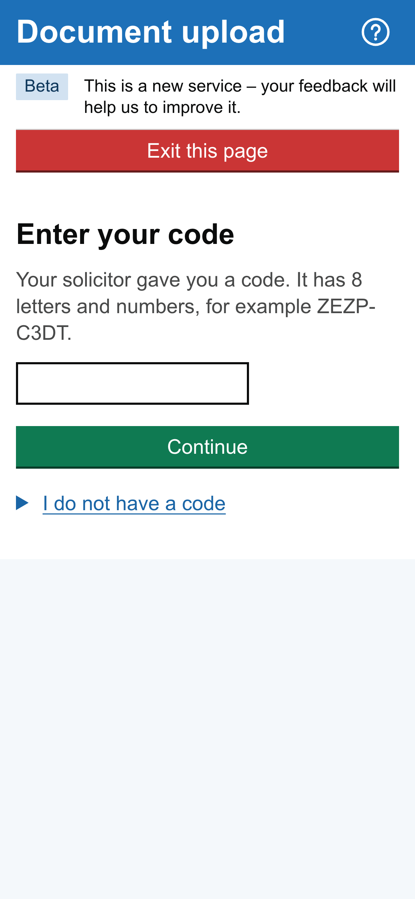
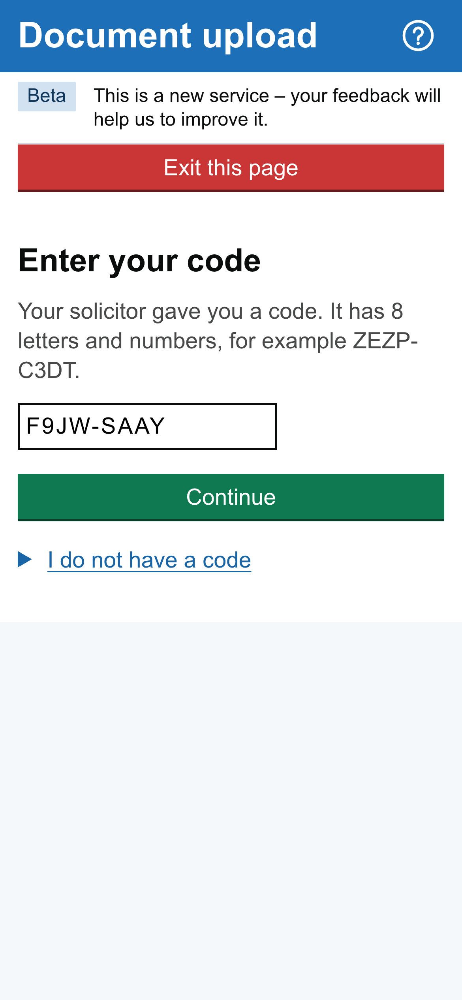
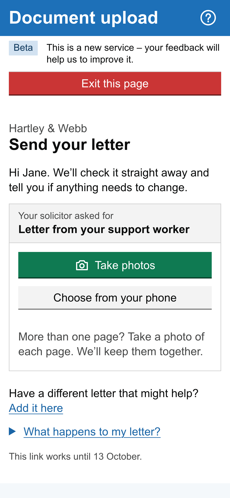
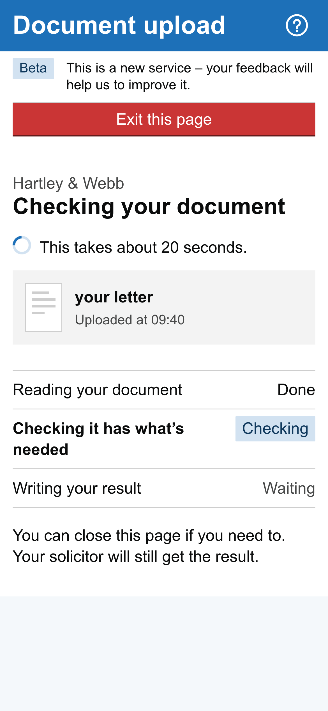
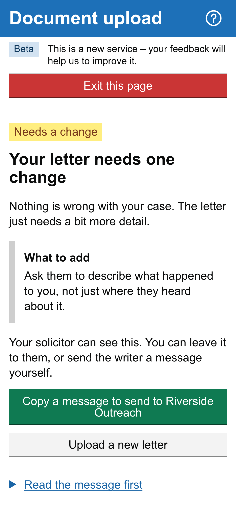

TODAY
WITH GATEWAY CHECK
Her solicitor is the gatekeeper.The first check is shared with Jane.
readjudgechase
Every letter waits here
First check, shared with Jane
now verifies
Optional. Only if her solicitor judges it safe. No account.
Gateway Check · /provider/cases/30a14cc479f5cd2b/clientGateway Check · /provider/cases/30a14cc479f5cd2b
1Jane's code, from her solicitor





Quick exit, always on screen
2Jane sees, in plain English
3Her solicitor sees the same result, live
The gate moves.Both see what's missing.